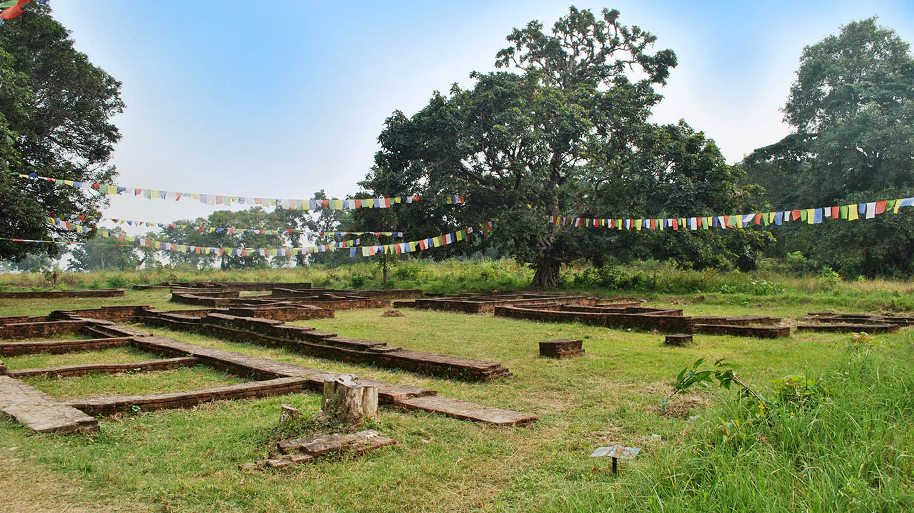
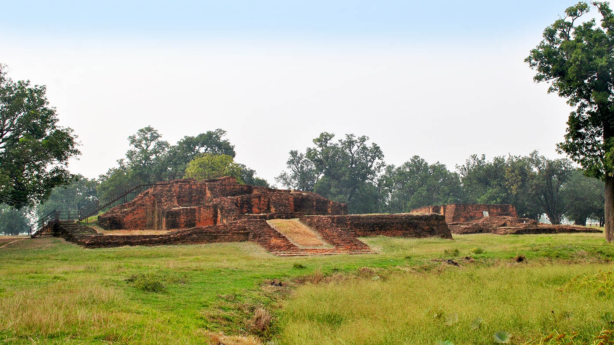
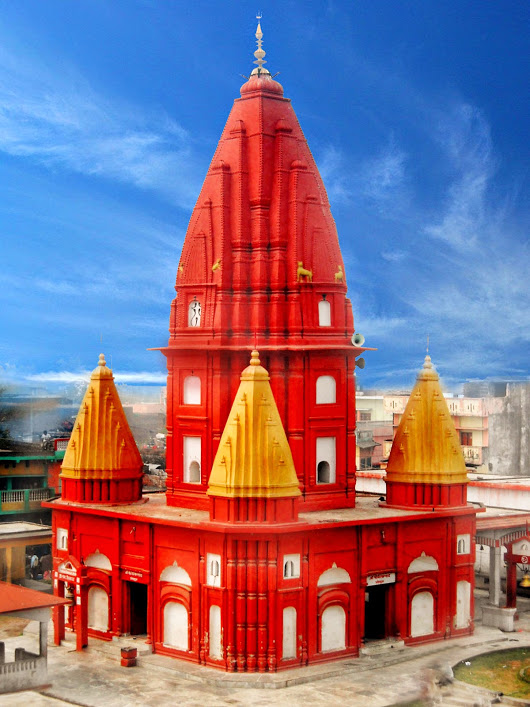

हाम्रो कपिलवस्तु
तिलौराकोट, कुदान, गोटिहवा, ताैलेश्वर शिव मन्दिर, सगरहवा, निग्लिहवा, डेरवा, सारकुप, अरौराकोट, सिसहनिया आदि ।
तिलौराकोट:
प्राचिन कपिलवस्तु नगरी भगवान बुद्धको २९ बर्षे जीवनको क्रिडास्थल, राजा शुद्धोधन को राजधानी शाक्य नगर कपिलवस्तु नगरपालिका – १२ स्थित तौलिहवा देखि ३ कि.मि. उत्तर क्षेत्रफल करिवन ३५ विगाहा सरकारी स्वामित्व रहेको छ । विश्वप्रसिद्ध ऐतिहासिक र पुरातात्विक महत्वको तिलौराकोटलाई प्राचीन कपिलवस्तुका रूपमा चिनिन्छ । जिल्लाको कपिलवस्तु नगरपालिकास्थित शिवगढ गाउँसँगै रहेको तिलौराकोट भगवान् गौतमबुद्धले २९ वर्षबिताएको ठाउँ तथा उहाँका बुबा राजा शुद्धोधनको राजाप्रसाद हो । शान्तिका अग्रदूत भगवान् गौतमबुद्धसँग सम्बन्धित भएका कारण उक्त स्थल विश्वप्रसिद्ध भएको हो ।

कुदान:
कुदान तौलिहवा खुनुवा सडक खण्डमा पर्ने कुदान तौलिहवा देखि करिव २.३ कि. मि. दक्षिण तर्फ पर्दछ । गौतम बुद्धले बुद्धत्तो (निर्वाण) प्राप्त गरिसकेपछि पहिलोपटक आफ्नो पिता राजा शुद्धोधनसंग भेट भएको स्थान यही हो ।

सांस्कृतिक सम्पदाहरु : समयमाई, ताम्रेश्वरनाथ महादेव, शिवगढी, रामघाट, लक्ष्मणघाट आदि ।
ताैलेश्वरनाथ मन्दिर:
कपिलबस्तु जिल्लाकाे सदरमुकाम ताैलिहवामा पर्ने याे मन्दिर हिन्दु धर्मावलमवीहरुकाे महत्वपुर्ण धर्मिक क्षेत्र मानिन्छ । यहा दैनिक सयाै भक्तजनहरु दर्शनकाे लागी अाउने गर्दछन् । विशेष गरी महाशिवरात्री पर्वमा यहाँ मेला लाग्ने र वाह्य जिल्लाका भत्तजनहरुकाे समेत अाउने गर्दछन् ।

चाडपर्व: दशैं, तिहार, फाल्गुण पुर्णिमा, रामनवमी, शिवरात्री, चैते दशैं, तिज, मकर सक्रान्ति, मोहर्म, ईद, बकर ईद आदि ।
मेला : रामघाट मेला, लक्ष्मणघाट मेला, रामलिला मेला, थारु पर्व, शिवगढी मेला, हथौसा मेला आदि ।
व्यापारिक स्थानहरु : तौलिहवा, कृष्णनगर, चन्द्रौटा, गोरुसिंगे, जितपुर, पकडी, लवनी आदि ।